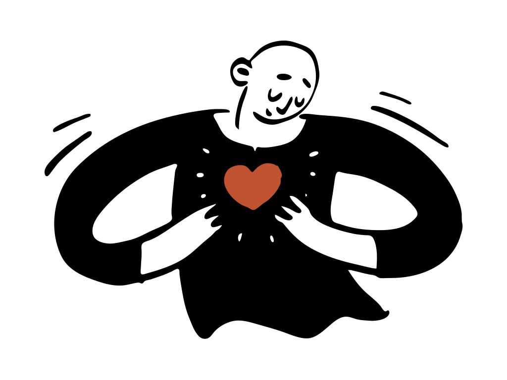
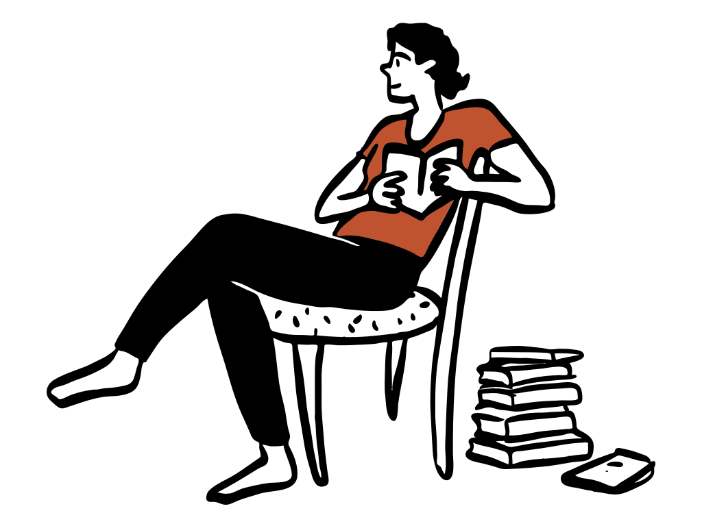
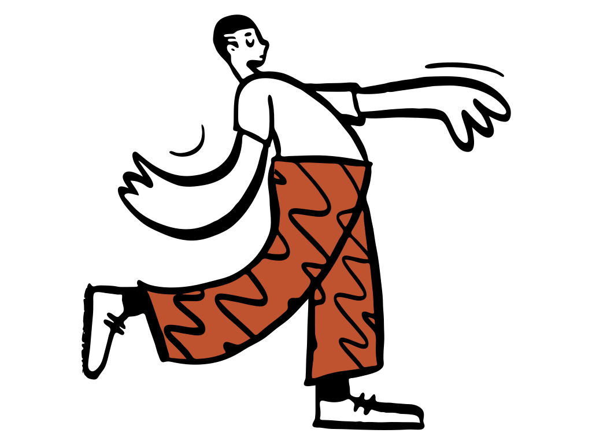
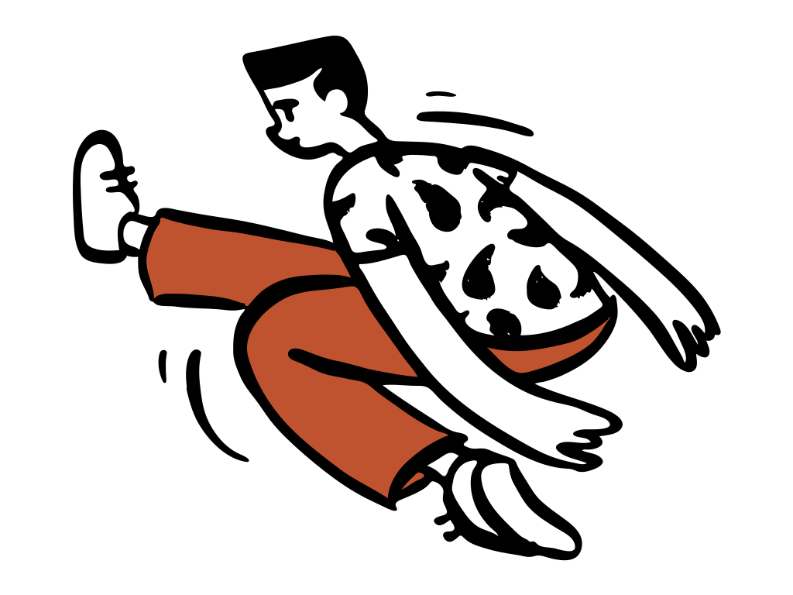
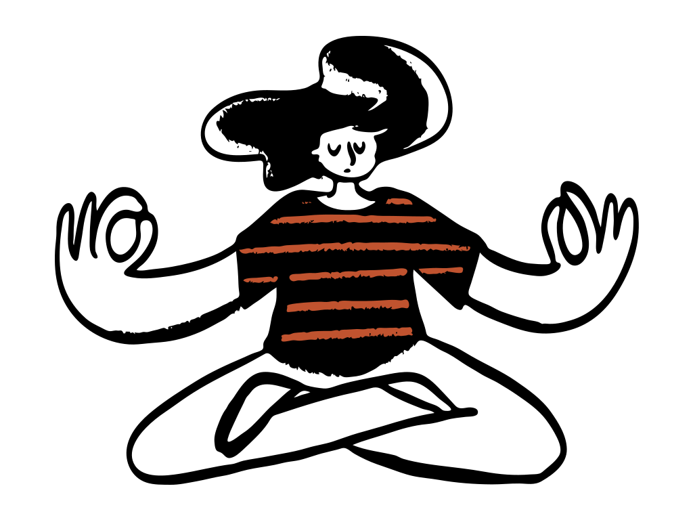
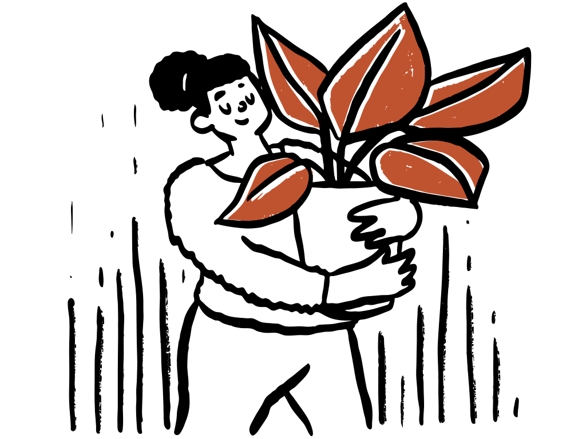

Joinville, em casa
A Priscila Cadena vai até a casa do seu pai, da sua mãe ou de quem você cuida, para trabalhar força, equilíbrio e mobilidade no lugar onde a pessoa se sente segura.

Talvez você já tenha notado
Força, equilíbrio e mobilidade podem ser trabalhados com acompanhamento.E funcionam melhor quando o treino acontece no lugar onde a pessoa vive, com os móveis e os degraus que ela usa todo dia.
Dentro de casa
Em vez de levar o idoso até uma clínica, a Priscila trabalha com o que já existe na rotina dele. Os exercícios são definidos na avaliação de cada pessoa.

Sentar e levantar é o gesto que mais pesa no dia a dia. Treinado na cadeira que a pessoa realmente usa.

Caminhar com segurança, com a fisioterapeuta ao lado, no piso e no espaço que a pessoa já conhece.

Subir e descer com mais firmeza, no degrau que ela enfrenta de verdade, e não num aparelho de clínica.
Movimento, força e autonomia para envelhecer melhor.
Como funciona

Uma mensagem no WhatsApp com o que você tem percebido. A Priscila responde e combina dia e horário.
Ela olha como a pessoa levanta, anda e se equilibra, e conversa sobre o que mais incomoda e o que ela quer voltar a fazer.
O trabalho é montado com o espaço e os móveis que existem ali, e quem mora junto aprende o que pode ajudar nos outros dias.
A cada visita, o que mudou em força, equilíbrio e mobilidade volta para a conversa com a família.
7 avaliações de pacientesTodas com nota máxima.
Preocupada com os pequenos detalhes, que fazem toda a diferença, além de ser um ser humano doce e gentil. Sou muito feliz em dia de fisioterapia!
Fisio atenciosa e amável, me deixou muito segura e passou confiança! Se mostrou muito experiente!
Profissional incrível! Muito atenciosa, dedicada e competente, recomendo demais!
Profissional excelente além de sempre muito dedicada e atenciosa.
Avaliações reais, copiadas da ficha da Priscila no Google Maps.
Atendimento
Na primeira visita a Priscila avalia o que existe no espaço e define o que fazer. Se faltar algo, ela combina com você. confirmar quais materiais ela leva
O ideal é que sim, porque o que ele ou ela quer voltar a fazer guia o trabalho. Quem decide pela família pode acompanhar a conversa e tirar dúvidas.
Pelo WhatsApp. Você conta o que tem notado, a Priscila responde e vocês combinam dia e horário.
Os valores são passados pelo WhatsApp, junto com os horários disponíveis.
Primeiro passo
Uma mensagem basta. A Priscila responde e explica como seria a primeira visita.
Falar com a Priscila no WhatsApp